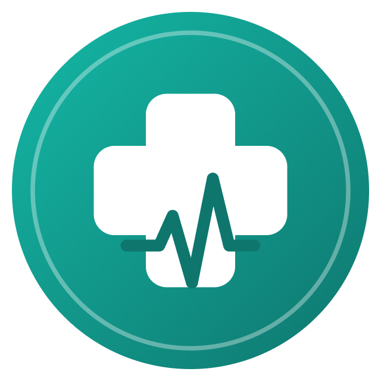
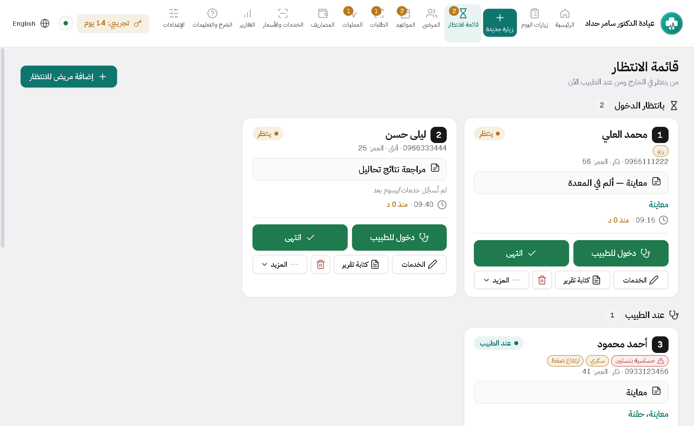
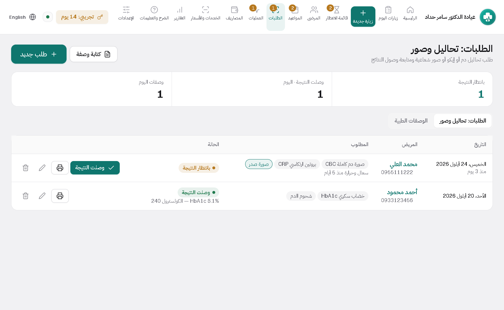
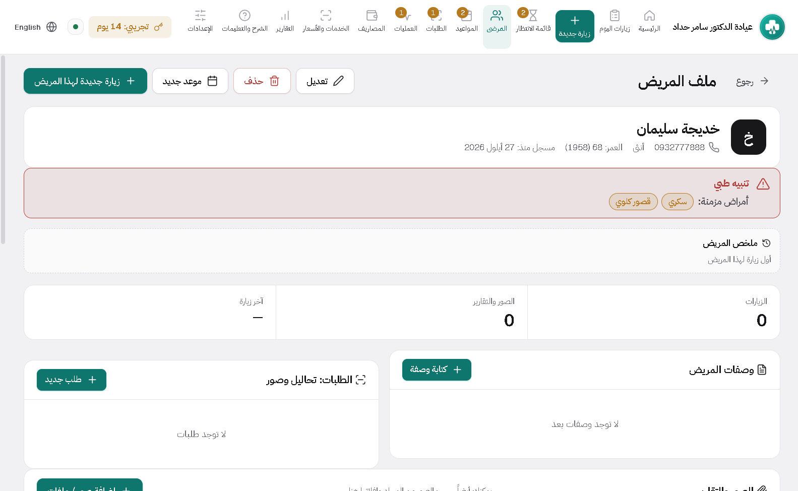
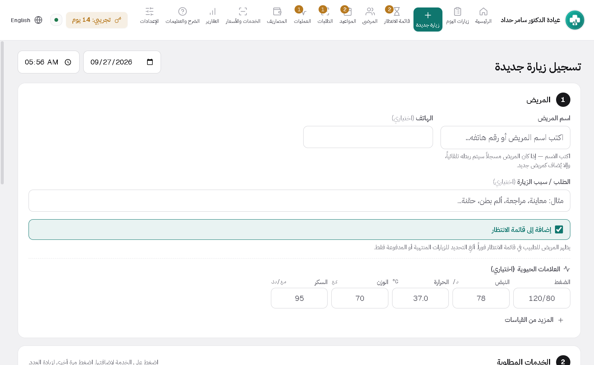

كلينك ديسك
لعيادات الداخلية والأطفال والجلدية والعظمية والعصبية والعينية والأذنية وغيرها: غرفة انتظار، وصفات وطلبات تحاليل وأشعة، علامات حيوية وتنبيهات الحساسية.
رمز هذا الجهاز تجده داخل البرنامج: الإعدادات ← ترخيص البرنامج. أرسله مع الطلب ويصلك رمز التفعيل.
من داخل البرنامج




ما الذي يفعله
مُعدّ لاختصاصك
اختر اختصاصك فيملأ البرنامج الخدمات والأدوية والتحاليل والعلامات الحيوية المناسبة له، وتعدّلها كما تريد.
وصفات تنبّهك للحساسية
اكتب الوصفة من قائمة أدويتك بجرعاتها، ويحذّرك البرنامج إن تعارض دواء مع حساسية مسجّلة للمريض.
طلبات تحاليل وأشعة
اطلب التحليل أو الصورة من الزيارة واطبع الطلب، وتابع النتائج المعلّقة حتى تصل.
علامات حيوية وتنبيهات
الضغط والنبض والحرارة والوزن في كل زيارة، وشريط أحمر أعلى الملف للحساسية والأمراض المزمنة.
غرفة انتظار ومواعيد
من وصل ومن عند الطبيب ومن انتهى، ومواعيد متكررة.
طباعة بمعاينة قبلها
كل ورقة تُعاين قبل طباعتها، بترويسة عيادتك وخط وحجم تختاره. ومستودع أدوية اختياري إن كانت عيادتك تصرف.
التركيب يستغرق دقيقتين
لا تحتاج خبرة تقنية. حمّل الملف، شغّله، وافتح البرنامج.
نزّل الملف
اضغط زر التحميل في صفحة البرنامج. الملف ينزل إلى مجلد التنزيلات.
شغّل ملف التركيب
اضغط عليه مرتين. إذا ظهرت رسالة من ويندوز، اختر «مزيد من المعلومات» ثم «تشغيل على أي حال».
افتح البرنامج
سيسألك عن اسم العيادة والطبيب والشعار، ثم يصبح جاهزاً للعمل.
غير متأكد أي برنامج يناسبك؟
أرسل رسالة واذكر اختصاص عيادتك، وسأرد عليك بنفسي.